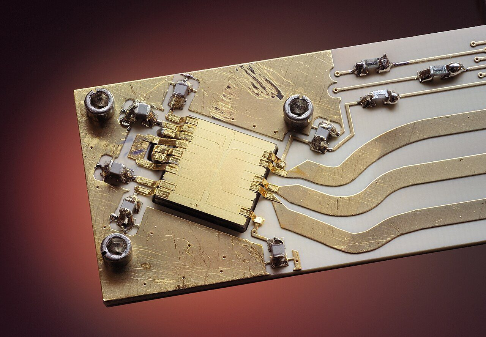

Computação quântica sem mistério: o que é um qubit, o que ela faz de verdade e o que ainda não faz
Não, o computador quântico não "testa todas as possibilidades ao mesmo tempo" nem vai substituir o seu notebook. Entenda a ideia por trás do qubit, onde essas máquinas podem ajudar e por que errar é o maior desafio.

"Computador quântico resolve em segundos o que levaria milhões de anos" é o tipo de manchete que aparece com frequência e que, quase sempre, esconde mais do que revela. A computação quântica é real, está avançando e tem aplicações promissoras, mas funciona de um jeito bem diferente do que as metáforas populares sugerem. Este guia explica o essencial para que você consiga ler as próximas notícias sem se perder, inclusive as que já publicamos sobre ganhos de desempenho.
Do bit ao qubit
O computador comum trabalha com bits, e cada bit vale 0 ou 1. Tudo o que ele faz, de uma planilha a um vídeo, é manipular enormes sequências desses zeros e uns. O computador quântico usa o qubit, que também pode representar 0 e 1, mas obedece às regras da física quântica e pode estar num estado de superposição: uma combinação dos dois, com certas "amplitudes" associadas a cada resultado.
Uma imagem útil, ainda que imperfeita, é a de uma moeda girando. Enquanto gira, ela não é nem cara nem coroa; ao ser medida, cai num dos dois lados. O qubit é parecido: antes da medição, é uma combinação; depois, é um resultado definido. A diferença importante é que, com qubits, é possível combinar essas "moedas" de forma que as possibilidades interfiram entre si, reforçando umas e cancelando outras.
O que "emaranhamento" quer dizer
Dois ou mais qubits podem ser preparados de modo que o estado de um não possa ser descrito sem o do outro. Isso se chama emaranhamento. Não é comunicação mais rápida que a luz, como às vezes se diz, e sim uma correlação que só aparece quando os resultados são comparados. Para a computação, ela é um recurso: permite que o conjunto de qubits represente informações que um conjunto de bits comuns não conseguiria representar com a mesma economia.
Por que a ideia de "testar tudo ao mesmo tempo" engana
É comum ouvir que um computador quântico "faz todas as contas de uma vez". Não é isso. No fim, é preciso medir o resultado, e a medição devolve só uma resposta. O truque dos algoritmos quânticos é organizar as operações para que as respostas erradas se cancelem e a correta tenha alta probabilidade de aparecer na medição. Isso só funciona para problemas com uma estrutura que permita esse arranjo, e são poucos os problemas conhecidos nessa situação.
Para que servem, de fato
- Simular sistemas quânticos. Moléculas, materiais e reações químicas são regidos pela física quântica, e simulá-los em computadores comuns fica rapidamente impraticável. É a aplicação mais natural, e a que mais motiva a área. A matéria sobre simuladores quânticos de matéria e energia mostra um passo nessa direção.
- Fatoração e criptografia. O algoritmo de Shor, proposto nos anos 1990, mostra que um computador quântico grande e livre de erros poderia quebrar parte da criptografia usada hoje. Ainda estamos longe disso, mas o risco já é levado a sério.
- Busca e otimização. Algoritmos como o de Grover dão ganhos modestos na busca em dados desorganizados. Para otimização, os ganhos práticos ainda são discutidos.
O que quase nunca acontece é um computador quântico acelerar tarefas do dia a dia, como abrir páginas ou rodar jogos. Para isso, o computador comum continua melhor e vai seguir sendo.
O verdadeiro obstáculo: os erros
Qubits são frágeis. Qualquer interação com o ambiente, como vibração, calor ou radiação, faz o estado quântico se perder, um processo chamado decoerência. Por isso, muitas dessas máquinas operam em temperaturas próximas do zero absoluto, e mesmo assim cometem muitos erros. O estado da arte hoje é construir sistemas com centenas ou milhares de qubits físicos, ainda ruidosos.
Para fazer cálculos longos de forma confiável, a ideia é usar a correção de erros quânticos: reunir muitos qubits físicos para formar um qubit lógico, mais estável. A conta é pesada: dependendo da tecnologia, podem ser necessários muitos qubits físicos para cada qubit lógico. Por isso, quando uma notícia diz que uma máquina tem "mil qubits", vale perguntar: físicos ou lógicos? E com que taxa de erro?
Diferentes tecnologias, diferentes apostas
- Circuitos supercondutores: usados por empresas como a IBM e o Google, são rápidos, mas precisam de resfriamento extremo.
- Íons presos: átomos eletricamente carregados, mantidos por campos elétricos e manipulados com laser, como o da imagem acima. Têm boa qualidade de operação, mas tendem a ser mais lentos.
- Átomos neutros: átomos mantidos por feixes de luz, que permitem arranjar muitos qubits numa grade.
- Fótons: usam partículas de luz como qubits, com vantagens para comunicação.
- Silício: qubits em chips semelhantes aos da indústria de semicondutores, o que facilitaria a produção em escala.
Ainda não está claro qual delas vencerá, e é possível que mais de uma sobreviva, cada qual para um uso.
O que a "vantagem quântica" significa
Quando uma empresa anuncia "supremacia" ou "vantagem quântica", significa que um computador quântico resolveu uma tarefa específica mais rápido do que os melhores métodos clássicos conhecidos. Essa tarefa costuma ser escolhida porque é favorável à máquina, e não útil na prática. Além disso, é frequente que pesquisadores de computação clássica encontrem depois algoritmos mais espertos que reduzem a vantagem. Isso não invalida o experimento, mas indica que a comparação precisa ser acompanhada com cuidado.
E a segurança dos meus dados?
Por precaução, institutos de padronização, como o NIST, dos Estados Unidos, já publicaram padrões de criptografia pós-quântica, projetados para resistir a ataques de computadores quânticos futuros. A preocupação é com dados que precisam ficar secretos por muitos anos: alguém poderia armazenar hoje mensagens criptografadas e tentar abri-las quando a tecnologia estiver madura. Para a maioria das pessoas, o conselho é simples: manter aplicativos e sistemas atualizados, pois a migração para os novos padrões acontecerá pelas atualizações.
Como ler uma manchete sobre computação quântica
- Procure qual problema foi resolvido e se ele tem utilidade fora do laboratório.
- Veja se a comparação é com o melhor algoritmo clássico ou com um método ingênuo.
- Pergunte quantos qubits eram físicos e quantos lógicos, e qual a taxa de erro.
- Desconfie de prazos exatos: "em cinco anos" costuma ser palpite.
A computação quântica é um campo sério, com avanços reais e um longo caminho pela frente. Tratar as notícias com interesse e paciência, e não com euforia nem descrença, é o jeito mais útil de acompanhar essa história.
Gostou? Receba as próximas.
As notícias internacionais que importam, em português, uma vez por semana.
Assinar a newsletter